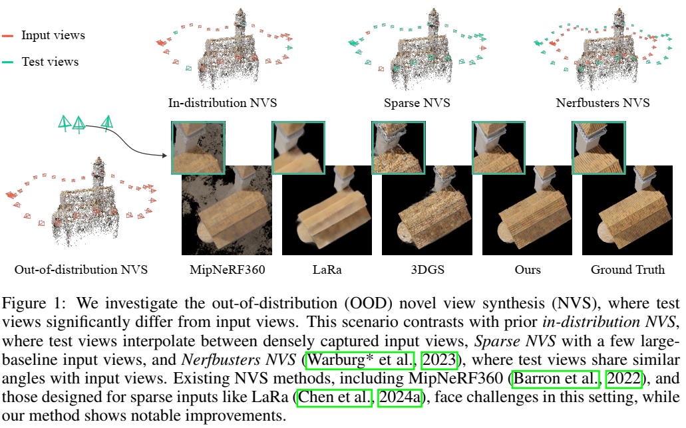

论文阅读三十三：SPLATFORMER：用于稳健3D高斯溅射的点Transformer
摘要
3D高斯溅射（3DGS）最近改变了真实重建，实现了高视觉保真度和实时性能。然而，当测试视图偏离训练期间使用的相机角度时，渲染质量会显著下降，这对沉浸式自由视点渲染和导航的应用程序构成了重大挑战。本工作中，我们综合评估3DGS及其相关的新视图合成方法，在分布外（OOD）测试相机场景下。我们展示了大多数现有方法，包括那些结合各种正则化技术和数据驱动先验的方法，难以高效泛化到OOD视图。为解决这种限制，我们引入SplatFormer，首个专门设计在高斯溅射上操作的点transformer模型。SplatFormer将在有限训练视图下优化的初始3DGS集作为输入，并在一次前向传递中对其进行细化，有效地消除了OOD测试视图中的潜在伪影。据我们所知，这是点Transformer直接在3DGS集上的首次成功应用，超越了以前多场景训练方法的局限性，这些方法在推理过程中只能处理有限数量的输入视图。我们的模型显著提高了极端新颖视图下的渲染质量，在这些具有挑战性的场景中实现了最先进的性能，并优于各种3DGS正则化技术、为稀疏视图合成量身定制的多场景模型和基于扩散的框架。项目页面：https://sergeyprokudin.github.io/splatformer/
引言
新视图合成（NVS）侧重于转换2D RGB图像到沉浸式3D场景，允许用户在增强现实（AR）和虚拟现实（VR）环境中导航。传统上，这个问题是使用标准的新颖视图插值协议来解决的，其中测试视图沿着输入视图的轨迹以固定间隔采样。基于该协议，已经出现了几种NVS方法，其中3D高斯溅射（3DGS）（Kerbl等人，2023）最近因在视图插值中实现实时和高保真结果而受到关注。
然而，AR和VR应用程序不仅需要输入视图之间的平滑过渡，还需要从输入分布之外的视角探索新的感兴趣区域的能力。例如，用户可能希望从高仰角观察场景，这在捕获的视图中经常缺失。虽然新视图插值已经取得了重大进展，但这种分布外的新视图合成（OOD-NVS）任务仍然没有得到充分的探索，特别是在评估协议和方法方面。一个相关的研究领域涉及从稀疏或单眼输入视图进行3D重建，其中方法通常需要幻觉看不见的内容（Liu等人，2023a；Chan等人，2023；Kwak等人，2024；Liu等人，2023）。虽然幻觉对创造性应用有益，但在需要精确重建的环境中可能是不可取的，例如手术过程的3D可视化（Hein等人，2024），在典型的日常捕捉场景中是不必要的。
想象一下，你正在博物馆里捕捉一尊雕像。通过改变相机的仰角并在物体周围行走，您可能能够捕捉到它的大部分特征。然而，相机角度的空间分布可能是不均匀的，甚至严重倾斜，从而产生某些分布不均的视图，其中对象的某些部分仅被稀疏地覆盖。图1中显示了一个示例，其中从用户的角度捕获输入视图，以不同但接近的仰角围绕对象旋转。分布外（OOD）目标视图从自上而下的角度观察对象，与输入分布有显著偏差。我们将这一挑战定义为分布式新视图合成（OOD-NVS）。我们认为，这个问题实际上与日常捕捉场景有关，但研究界在很大程度上忽视了它。为了研究这个问题，我们从ShapeNet（Chang等人，2015）、Objaverse 1.0（Deitke等人，2023）和Google Scanned Objects（Downs等人，2022）数据集中渲染3D资源。如图1所示，当局限于低仰角输入时，现有的NVS方法在OOD视图上表现不佳，这突显了需要一种新的方法来解决这个问题。

大量的研究工作已经转向在输入视图不足的情况下进行稳健的3D重建。首先，一些3DGS变体通过神经辐射场中的隐式偏差（Mihajlovic等人，2024）或几何一致性项（Huang等人，2024a）使高斯属性正则化。其次，许多方法试图利用外部数据集中的先验。例如，一些方法使用立体估计器来监督渲染的深度图（Zhu等人，2024），尽管这些方法面临着尺度模糊问题。某些方法在大型数据集上预处理特征网格（Chen等人，2023；Sen等人，2023），但这些先验通常仅限于单个对象类别。其他方法使用来自预训练扩散模型的2D先验（Sargent等人，2024），但难以解决多视图不一致问题。此外，一些前馈模型从几个输入视图预测3D图元（Chen等人，2024a；b；Yu等人，2021），但由于计算约束，它们处理的图像不超过四幅，限制了它们利用密集多视图输入的能力。这些方法大多仅在视图插值或稀疏视图重建上进行评估，无法解决OOD-NVS设置中遇到的伪影。
定义隐式正则化来改进OOD-NVS是一个重大挑战。我们假设，解决这个问题需要仔细考虑三个关键方面：1）利用大规模数据集中的通用先验，2）确保渲染的3D一致性，3）充分利用所有输入视图中的丰富几何信息。为了满足这些需求，我们提出了SplatFormer，这是一种基于学习的新型前馈3Dtransformer，设计用于在高斯溅射上运行。SplatFormer将一个初始的3DGS集（使用所有输入视图进行了优化）细化为一个新的增强集，该集在OOD条件下以较少的伪影生成多视图一致的2D渲染。
我们的方法首先从输入视图优化3DGS。虽然这种初始的3D表示有效地整合了来自捕获图像的多视图信息，但我们观察到高斯溅射的形状、外观和空间结构变得偏向于输入视图分布。这通常会导致细长的高斯溅射仅覆盖投影在输入视图上的薄区域，从而导致稀疏的表面覆盖。此外，这些溅射可以形成无序的几何结构，这些结构在输入视图中看起来是正确的，但在OOD视图下渲染时会出现明显的伪影。
与之前依赖手工制作的正则化技术的工作不同（Xie等，2024；Li等，2024b），我们采用了点transformer（赵等，2021），这是一种为3D场景理解而设计的基于注意力的架构，将3DGS处理为以高斯属性为特征的点云集。点transformer中的注意力机制学习捕获嵌入在3DGS中的多视图信息，专注于初始3DGS预先计算的空间结构内的局部邻域。它输出残差，并将其添加到输入高斯属性中。然后从新视图渲染更新的3DGS，并将渲染图像和真实图像之间的光度误差最小化，以训练SplatFormer。我们使用 ShapeNet 和 Objaverse 1.0 整理了大规模的初始、有缺陷的 3DGS 集训练对以及分布内和 OOD 视图的真实图像，这得益于 3DGS 的快速优化和大规模 3D 和多视图数据集的可用性。通过对该数据集进行训练，SplatFormer 学习了可泛化的先验知识以优化 3DGS，从而有效地去除 OOD 视图中的伪影，同时保持 3D 一致性。
我们使用所提出的OOD-NVS评估协议，根据基线模型评估SplatFormer。我们的实验表明，经过训练后，SplatFormer显著减少了3DGS OOD视图渲染中的伪影，在ShapeNet和Objaverse的测试场景的定量和定性结果方面都有了实质性的改进。此外，我们证明SplatFormer的工件移除功能可以推广到以前看不见的数据集中的新对象类别，如谷歌扫描对象（Downs等人，2022），以及现实世界的捕获。总之，我们做出了以下贡献：
- 我们介绍了OOD-NVS，这是一种新的实验协议，专门用于评估NVS方法在从输入视图分布之外的新视角渲染3D场景时的性能。我们的结果表明，现有的方法在OOD-NVS协议下难以推广；
- 我们提出了SplatFormer，这是一种新的基于学习的模型，可以改进有缺陷的3D高斯布局，以减轻OOD视图中的伪影。SplatFormer是第一种将点transformer应用于3DGS处理的方法，有效地利用了来自密集输入视图集的多视图信息，并学习3D渲染先验移除微影；
- 我们证明，SplatFormer显著提高了基于3DGS的方法在OOD-NVS任务上的性能，在以对象为中心的场景中取得了实质性的进展，同时也展示了在无界环境中的应用潜力。
相关工作
在本节中，我们回顾了与我们的主题相关的几种新颖的视图合成方法。这些方法可以大致分为三种模式：（1）主要通过视图插值评估的通用NVS方法，（2）从稀疏视图重建，以及（3）利用先验和正则化技术增强NVS的方法。
新颖的视图插值。在大多数NVS场景中，输入和测试视图都是从相同的分布中采样的，通常遵循固定的轨迹或半球形模式，如Blender NeRF（Mildenhall等人，2020）、LLFF（Mildenhal等人，2019）和Phototourism（Jin等人，2021）等常见数据集中观察到的那样。代表性的工作，如NeRF（Mildenhall等人，2020）、InstantNGP（Muller等人，2022）和3DGS（Kerbl等人，2023），在这种视图插值协议下表现出了很强的性能。然而，正如我们稍后将演示的那样，他们在从分布外（OOD）角度呈现新颖视图时遇到了困难，这是一个尚未被充分探索的挑战。
稀疏视图重建。另一项研究侧重于从稀疏的输入视图集（通常少于四个）重建和渲染3D场景。像Zero123（Liu等人，2023a）和其他（Sargent等人，2024；Liu等人，2033b；Kwak等人，2024）方法，从单眼输入预测NeRF表示或多视图图像，通常需要模型产生看不见的区域的幻觉。类似地，类似于（Yu等人，2021；Charatan等人，2024；Wewer等人，2024a；Chen等人，2024a；b）的方法直接从稀疏视图预测3D图元。一些方法（Hollein等人，2024；Gao等人，2024）将多视图输入聚合到基于2D扩散的生成模型中，这些模型更适合创造性任务，但在需要测量精确重建时不太适用。
分布外新视图合成（OOD-NVS）。与标准插值设置不同，Nerfbusters (Warburg* 等，2023) 沿不同轨迹捕获输入和测试视图，与我们正在解决的 OOD-NVS 问题密切相关。然而，它们的输入和测试视图在视角上保持相对相似，观察到的伪影主要是由“不可见性问题”引起的，其中测试视图超出了输入观察范围，而不是来自显着的视点偏差。相比之下，我们的方法在不解决不可见性问题的情况下解决了大视角偏移问题，通过增强在大角度偏差中的泛化填补了这一空白。
无约束重建的正则化技术。稀疏的输入视图会显著降低NVS性能，导致各种工作探索几何先验、空间正则性约束和数据驱动先验。几何先验已用于SuGaR（Guedon&Lepetit，'2024）、2DGS（Huang等人，2024a）和GeoGaussian（Li等人，2024b），这些先验应用了手工制作的自我监督损耗，以更好地将高斯溅射与表面几何形状对齐。同样，在SplatFields（Mihajlovic等人，2024）和ZeroRF（Shi等人，2024）中探索的空间规律性约束整合了Deep Image Prior（Ulyanov等人，2018）来规范3DGS和NeRF重建，从稀疏输入中产生更稳健的结果。然而，这些方法提供的改进有限，因为它们不利用外部数据。数据驱动先验已被多部作品采用。FSGS（Zhu等人，2024）和DNGaussian（Li等人，2024a）使用深度立体模型监督深度图，但存在尺度模糊的问题。InstantSplat（Fan等人，2024）使用密集点云进行3DGS初始化，尽管它很难进行过拟合。Nerfbusters（Warburg*等人，2023）为后处理NeRF预设计了一个扩散模型，仅实现了微小的改进。外观先验（Zhu等人，2024；Sargent等人，2024:Wu等人，2024a；Gao等人，2024.；Kwak等人，2024].）使用2D扩散模型来规范新颖的视图渲染，但往往难以实现多视图一致性。此外，SSDNeRF（Chen等人，2023）和HypNeRF（Sen等人，2023年）在以对象为中心的数据集上预训练3D特征网格，但在多类别实验中表现不佳。
基于学习的2D到3D模型。数据驱动模型的另一个特例涉及在大规模多视图图像数据集上训练前馈模型，以从2D图像中预测3D表示。SyncDreamer（Liu等人，2023b）和ViewDiff（Hollein等人，2024）微调预训练扩散模型，从一个或几个输入视图生成多视图图像。PixelNeRF（Yu等人，2021）、MVSplat（Chen等人，2024b）和相关工作（Charatan等人，2024；Wewer等人，2024）将2D图像特征转换为NeRF或高斯溅射。尽管这些模型可以从多视图数据集中学习通用先验，但它们通常仅限于少数输入视图，限制了它们充分利用较大多视图输入的能力。
3D点处理技术是我们工作的核心，广泛应用于3D任务。与2D图像特征或3D网格不同，点云是无序和不均匀分布的，需要专门的架构来处理它们的不规则性和稀疏性。解决方案包括稀疏卷积（Choy et al.，2019）、MLPs（Qi et al.，2017）和transformers（Wang，2023；Yang et al.；2023；赵et al.，2021）。点transformer（赵等人，2021）利用注意力对空间关系进行建模，已被证明特别有效。进一步的进展（Wu等人，2022；2024b）提高了其效率，在3D分割方面实现了最先进的性能。我们的工作是第一个将点transformer应用于细化3D高斯溅射（3DGS）的工作，利用其在不规则点云中捕捉空间关系的能力来增强新颖的视图合成保真度。
综述：三维高斯溅射（3DGS）
3D高斯溅射（3DGS）使用高斯溅射基元 编码场景，通过体积溅射进行渲染。每个基元由其平均位置 、不透明度 , 用于建模视图依赖的颜色 的S维球谐函数 和 由缩放 的协方差矩阵 和用于强制正半定的旋转四元 向量来定义。
溅射的渲染是通过将其投影到图像平面来进行，形成2D高斯分布：
其中， 和 是投影的溅射中心和协方差矩阵。
为了计算位置 的像素颜色 溅射按有序的深度排序混合：
优化。参数 使用Adam优化器（Kingma & Ba，2015）优化，通过最小化 和D-SSIM损失的权重组合：
其中， 设置为0.2，根据原始3DGS公式。为避免局部最小化，3DGS使用周期性的启发式致密化和高斯溅射剪枝。
稳健的分布外新视图合成
3DGS的局限。虽然溅射基元的直接优化允许3DGS紧密适应输入图像，它常常导致过拟合，由于灵活的基元过于精确地符合单个像素。高斯分布的平滑连续属性支持有效插值，仅当测试视图类似于训练视图。为演示该局限，我们进行了可控实验（图2）模拟典型的用户捕获图像同时旋转一个物体的场景。挑战源于当从分布外视点渲染时，例如提高相机角度，这是AR和VR应用程序的关键要求，这些应用程序需要从各个角度进行一致的3D渲染。

重要观察。如图2所示，随着测试相机仰角的增加，重建质量显著下降，突出了3DGS在处理OOD视图时的关键限制。该挑战在于使得表示对于这种视点的改变稳健，同时保持3DGS的优势，如实时渲染和与基于光栅化的工具兼容。通过结合先验和约束到3DGS的优化老解决该限制是个复杂任务。先前的方法已经尝试使用集合约束（Huang等，2024a；Mihajlovic等，2024）和数据驱动先验（Fan等，2024）来解决。然而，如稍后所示（表1），这些方法在取得稳健新视图合成中达不到要求，从而需要更加有效的方法。我们任务解决该问题需要结合三个关键方面：利用来自大规模数据集的泛化先验、确保渲染中3D一致性、和充分利用来自所有输入视图的丰富的集合信息。
方案：SplatFormer。 我们引入SplatFormer，一种新的基于学习的前馈3D神经模块来操作高斯溅射，实现稳健的来自OOD视图的新视图合成。如图2所示，我们的方法保持了高视觉质量，即便当测试视图与输入视图差异明显时。SplatFormer，由可学习参数 参数化，通过捕捉空间关系和建模溅射间的交互来克服倾向于输入视图的偏差。受transformer架构启发，其擅长学习数据中的复杂关系（Brown等，2020），我们采用该方法进行3D高斯溅射的前向细化。
重建过程（图3）开始于一组已校准输入图像，从中我们使用章节3所述的3DGS 优化过程来生成溅射基元 。由于这些溅射偏向于输入视图，我们应用SplatFormer进行前向精细化，来实现稳健的分布外新视图合成。SplatFormer利用层次系列的transformer编解码器层 ，基于Point Transformer V3(PTv3)架构（Zhao等，2021；Wu等，2024b），且在大型3D形状集上使用2D渲染损失训练。这种监督通过层次网络结构强制空间正则化细化溅射基元，利用来自大规模数据集的泛化先验，并通过多视图一致性渲染监督来确保在细化溅射中的3D一致性。编码阶段，SplatFormer分配给每个溅射一个抽象的V维特征向量 ：
其封装了3D基元的关键细节。特征解码器 然后转换该潜在表示为溅射属性残差：
其产生一组细化的溅射 ，对于OOD新视图合成更加健壮：
点Transformer编码器 。我们的3DGS溅射编码器基于PTv3框架（Wu等，2024b）。输入点集首先传入嵌入层获得相应的输入特征，紧跟着5阶注意力模块和上采样网格池化层（Wu等，2022）。然后另外的4阶注意力模块和下采样网格池化层用于恢复分辨率。为了捕获高频细节和改进梯度流，跳跃连接MLP模块用于映射中间下采样输入到残差，然后加到相应分辨率的上采样层。每阶包含具有层归一化的注意力模块、多头注意力和MLPs。这种层次化架构建模邻居基元间上下文关系。为了有效实现基于空间临近性的注意力，我们采用PTv3的序列化和网格池化策略。
特征编码 $g_{\theta}。被提取的特征进一步与原始溅射属性拼接来增强收敛，通过结合transformer的上下文感知特征和初始属性。每个点的特征然后传入共享的特征解码器头，它包含5个序列化MLP模块来预测初始溅射的属性的残差。为进一步改进训练稳定性，我们零初始化最后的MLP层的权重和偏差来零初始化残差特征，确保初始输入与输入3DGS紧密匹配。
学习数据驱动先验
数据集。为了使得SplatFormer使用数据驱动先验来细化不完美的高斯溅射，我们策划了包含高斯基元和相应多视图图像的大型数据集。我们利用33k和48k分别来自ShapeNet（Change等，2015）和Objaverse-1.0（Deitke等，2023）数据集的场景。这些资源是从低视角输入视图和高视角非分布（OOD）视图中渲染的。初始溅射从低视角视图生成（按章节3）。数据收集过程，需要大约3000GPU小时，使用预算GPU，如RTX-2080Ti来高效执行。我们将发布数据和相应渲染代码来促进进一步研究。
训练目标。通过最小化光度损失（方程3）生成初始3DGS后，使用低视角输入视图，SplatFormer模块执行前向细化。细化的溅射然后按方程2渲染输入和OOD视图，使用光度和感知LPIPS（Zhang等，2018）损失的结合：
该损失使用Adam优化器（Kingma & Ba，2015）跨多视图图像来优化，集合低视角和高视角OOD视图。该平衡方法确保模型泛化到未见过的角度，同时保留分布内视图的高保真度。
我们介绍的数据集和训练方法允许SplatFormer学习来自多样化范围的3D目标和视图配置的丰富的数据驱动先验。这些学习到的先验使得模型修正3DGS到输入视图的偏差，从而实现OOD场景中更加精确和一致性的重建。